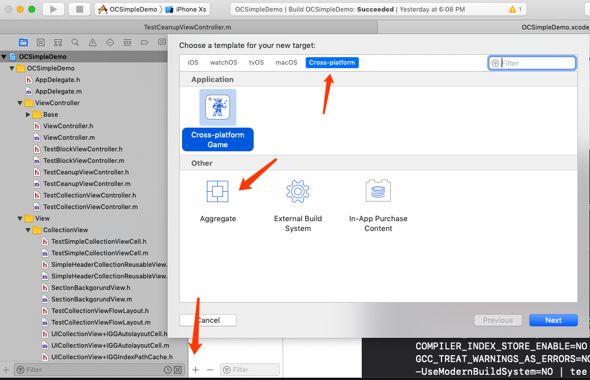
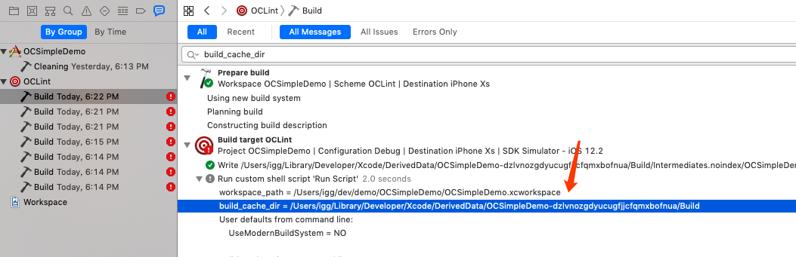
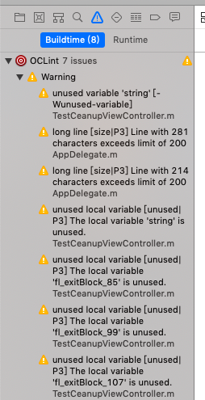
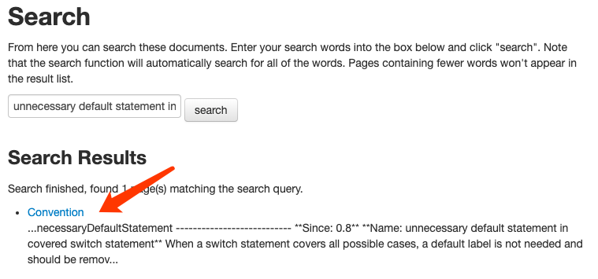

Overview
OCLint 是一个静态源码分析工具，通过检查 C/C++/OC 代码来提高代码质量和减少缺陷，还可以扫描出潜在 bug、未使用代码、复杂代码、冗余代码、不良实践等。
OCLint is a static code analysis tool for improving quality and reducing defects by inspecting C, C++ and Objective-C code and looking for potential problems like possible bugs, unused code, complicated code, redundant code, code smells, bad practices, and so on.
- OCLint 内置了 71 条检测规则
- 支持忽略指定规则
- 支持配置规则参数
- 支持忽略指定文件夹、文件名
- 支持扩展自定义规则
一般来说 OCLint 内置的规则可以满足大部分项目需求，扩展自定义规则不在本文介绍范畴，如果以后项目组有需求，再进行补充。
笔者认为 OCLint 在源码分析方面已足够强大和易用，唯一的问题就是它分析源码的速度不快，如果是大项目接入，运行一次所需的时长在 30min 以上，当然这跟开发设备也有关系。慢是慢了点，但是目前也没有更好的替代方案，提醒读者测试时使用小工程测试。
安装/升级
安装 OCLint
sudo gem install -n /usr/local/bin xcpretty |
升级 OCLint
brew update |
使用
在 Xcode 工程里面添加一个新的 Target，并选择 Aggregate 模板。

新建一个 Script
修改脚本
注意修改 workspace_path 和 scheme_name，确保工程路径和 scheme 正确。
确认 build_cache_dir 没有问题，再打开 rm 语句，这里直接调用 rm 是因为笔者调用 xcodebuild clean 不能正常清理编译缓存，如果不能清理编译缓存，第二次运行脚本会出现异常。
可以在编译 log 处检查路径是否正确：

cmd+B 运行脚本
如果运行正常，可以看到如下编译警告

导出 HTML
上面的脚本是直接在 Xcode 上显示警告信息，如果工程里有很多警告，会导致分析结果的显示特别慢，这时候可以将分析结果导出到 HTML 文件中查看。
只需要将
-report-type xcode修改为-report-type html -o oclint.html重新运行一次脚本即可在工程目录下看到 oclint.html 文件。忽略文件
脚本中的
-e指令用于指定忽略检测的文件夹或文件，参数支持Python正则表达式，允许配置0个或多个，请根据实际项目需求配置。更多参数
json-compilation-database命令最终调用的是oclint命令，脚本中--后面的参数，是传递给oclint的，更多的oclint参数见这里，其中-disable-rule禁用某条规则，-rc设置规则属性，这两个比较常用。建议项目组的项目，统一使用下文的团队配置方案，这样才能在团队内部保持一致，尽量避免在这里配置检测规则。
规则配置
OCLint 可以从配置文件中加载检测规则，包括以下三级配置文件：
- 系统配置：
$(/path/to/bin/oclint)/../etc/oclint - 用户配置：
~/.oclint用户配置可以逐条覆盖系统配置，用户配置未指定的以系统配置为准。 - 项目配置：
<prj_dir>/.oclint项目配置可以覆盖系统配置和用户配置。
实际工作中，建议统一用户配置，尽量不使用单独项目配，当然要注意同步好用户配置。
附上一份参考配置，其中 key 值含义见这里，rule-configurations 阈值含义见这里，查询需要禁用的规则名称，可以用提示信息到文档中检索即可，如检索：unnecessary default statement in covered switch statement

可以查到对应的规则是UnnecessaryDefaultStatement，再将它添加到disable-rules列表里即可。
小结
本文介绍了 OCLint 的简单应用，下文会介绍一下 OCLint 结合 Jenkins CI，搭建源码质量跟踪系统。